File Manager
File Manager is the main file management tool in DNA-Nexus. Users can browse their files, open folders, select items, manage shared workspaces and recover deleted files from the trash.
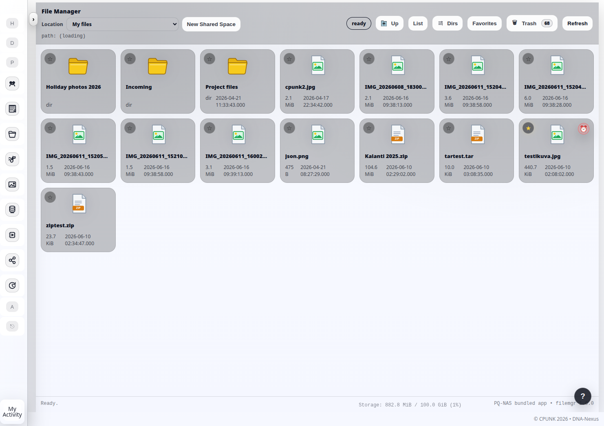
What File Manager does
File Manager shows the user's files and folders. It is the basic tool for browsing, opening, uploading, downloading, moving, renaming and deleting stored content.
The same interface can also open shared workspaces. Shared workspaces allow the user to collaborate with other people in a common file area. Depending on the workspace settings, the user can invite other DNA-Nexus users or external collaborators to use the shared file area.
Moving between folders
Users can move from one folder to another by double-clicking folder icons. To go back to a higher level, use the Up button in the top toolbar or click the breadcrumb path.
The breadcrumb path shows the current location and lets the user jump back to an earlier folder level without navigating one step at a time.
Selecting files and folders
Files and folders can be selected one at a time, or several at once. Users can drag a selection box with the mouse, or use Shift and Ctrl together with mouse clicks to select multiple items.
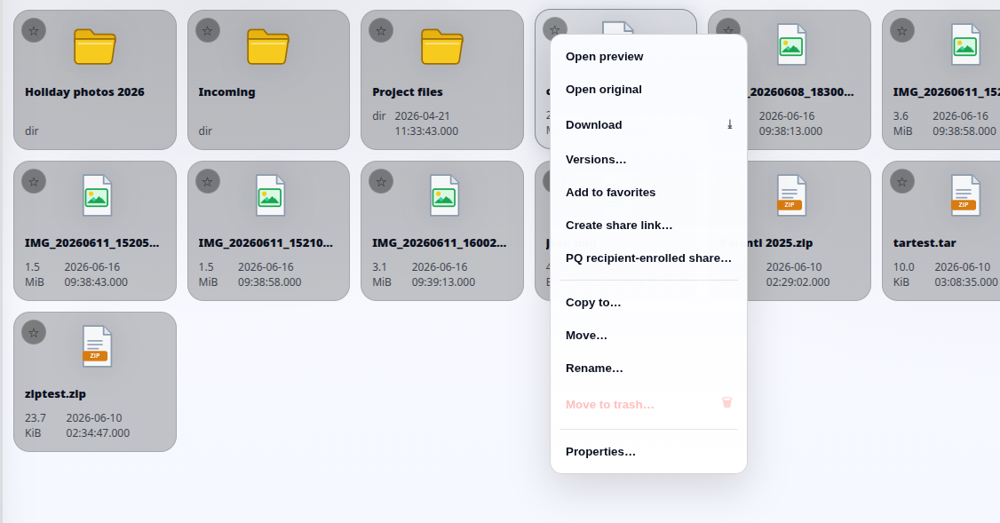
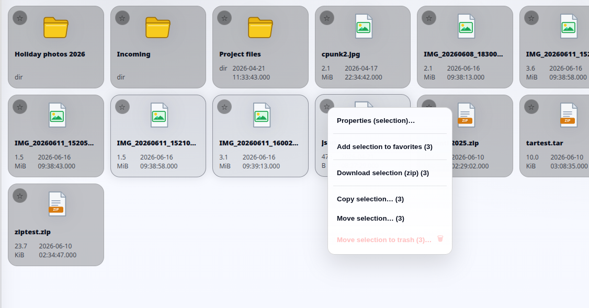
Context actions
File Manager shows different actions depending on what the user has selected. The context menu can change depending on whether the selection contains one file, several files, one folder, or multiple items.
This means that some actions are only shown when they make sense for the current selection.
File properties, comments and locking
When the user selects Properties from a file menu, a dialog opens that shows the file's main details and related actions.
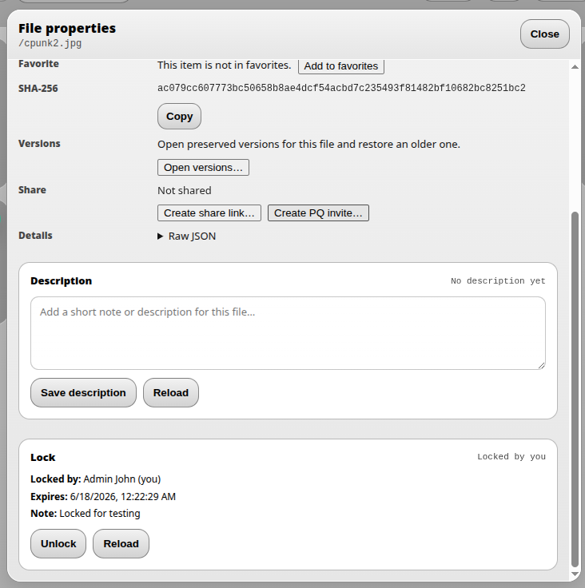
From this dialog, the user can mark the file as a favorite, copy the file checksum (SHA-256), view available file versions, create a normal share link, or create a post-quantum (PQ) invite link.
At the bottom of the dialog, the user can also add a comment and lock the file. Comments are visible to other users and are especially useful in shared workspaces. File locking is also important in shared workspaces when users want to show that a file is reserved or should not be edited by others at the same time.
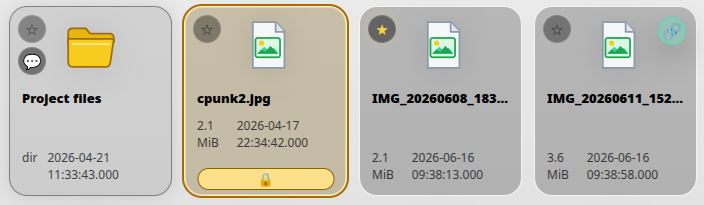
When a file has a comment, a speech-bubble badge appears on the file icon. A locked file is highlighted in yellow and shows a lock symbol. A favorite file shows a yellow star, and a shared file shows a share badge.
File versioning and comparison
DNA-Nexus can preserve older versions of files. When a file is saved to the server, the user can keep the previous version. The newest file becomes the current version, while older versions remain available behind it.
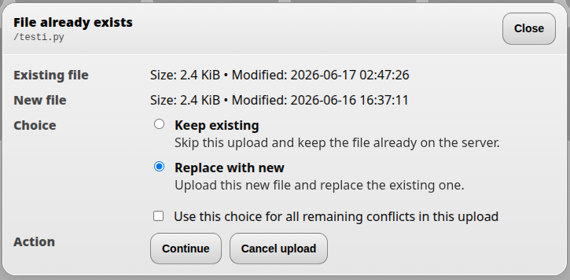
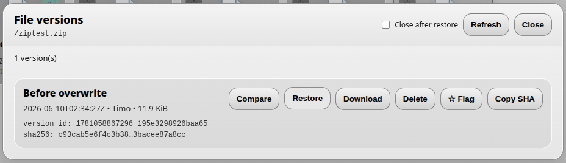
By opening Versions from the file context menu, the user can view earlier versions of the file. The version list also shows whether a version has been marked or locked.
DNA-Nexus can handle comparisons between different file types. Archive-style files, such as ZIP and RAR-type packages, can be compared to show differences between the package contents.
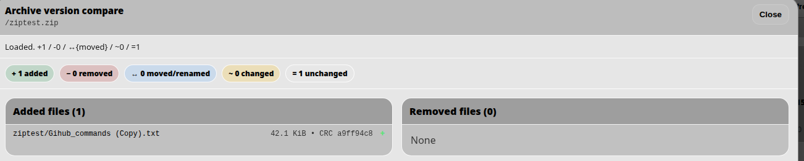
The archive comparison view shows which files were added, removed, moved, renamed, changed or left unchanged between two package versions.
Image files can be compared side by side. Text-based files can be compared in a GitHub-style diff view, where new text is highlighted in green and removed text is highlighted in red.
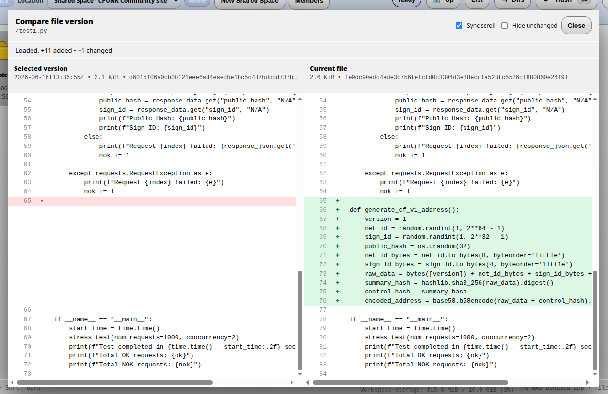
Secure sharing and PQ invite links
File Manager can create share links for files so that the user can share a file with an external recipient. The recipient opens the link in a browser and can download the file or, for supported media such as video, view it directly in the browser.
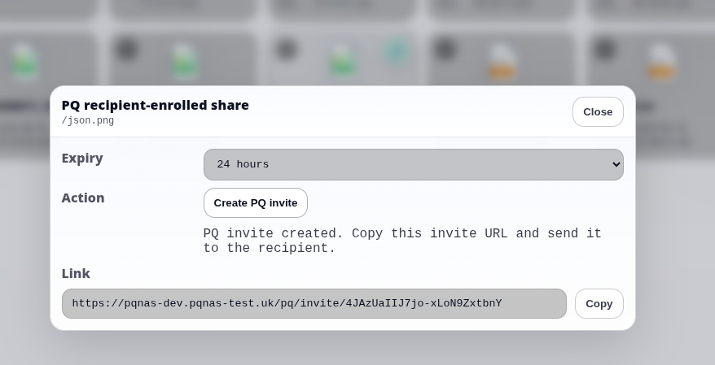
For sensitive files, the user can create a post-quantum (PQ) invite link. A PQ invite link protects the shared file with ML-KEM-768 and AES-256-GCM. The file key is opened in the recipient's browser, and the file is decrypted locally before download.
When the recipient opens a PQ invite link, the browser uses a local device key protected by a passphrase. The passphrase is never sent to the server and cannot be recovered by the server. After the recipient enrolls the browser, the share is tied to that browser's local device key. This means that a copied link alone is not enough to open the protected file from another browser or device.
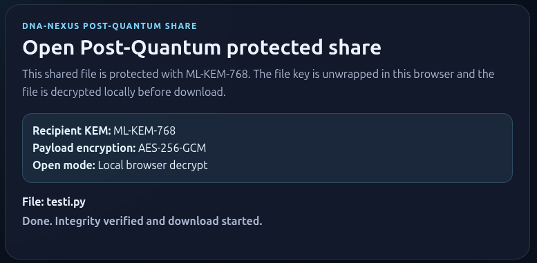
On the final download page, DNA-Nexus shows the protection details, including the recipient KEM, content encryption method and local browser decryption status. This gives the recipient clear confirmation that the protected share is decrypted locally in the browser before the file is downloaded.
Shared workspaces
A shared workspace is the collaborative version of File Manager. It is designed for situations where multiple people need access to the same files and folders.
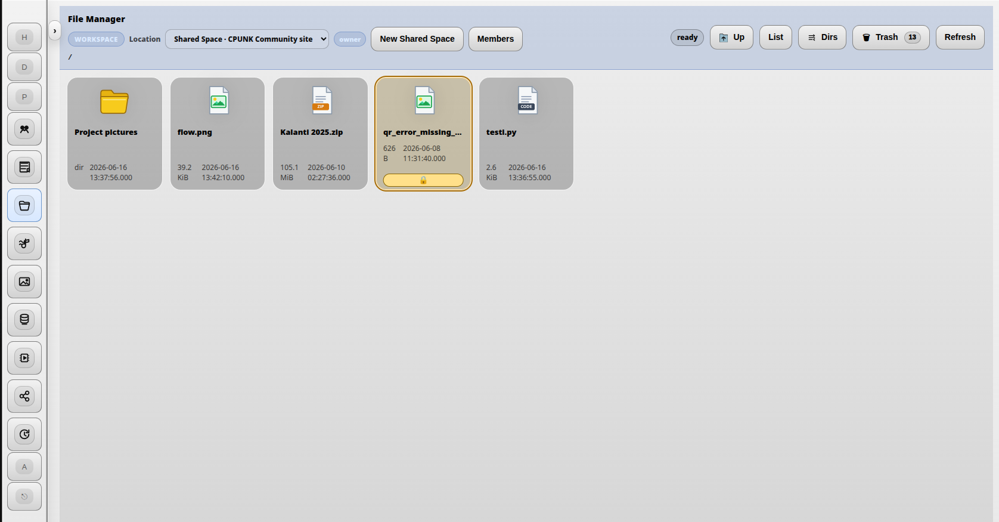
A new shared workspace is created with the New shared workspace button.
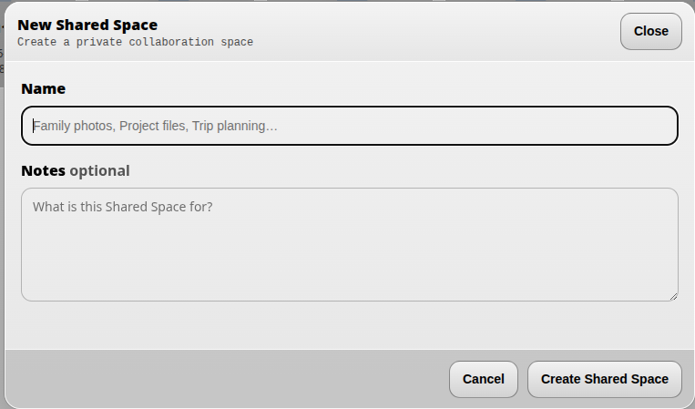
When a new shared workspace is created, DNA-Nexus automatically reserves 10 GB from the workspace owner's storage quota for the workspace files. If the owner does not have 10 GB of free quota available, the workspace cannot be created.
In a shared workspace, you can invite friends, team members and collaborators to manage common files together.
Workspace members are managed from the Members button, which opens the member management dialog.
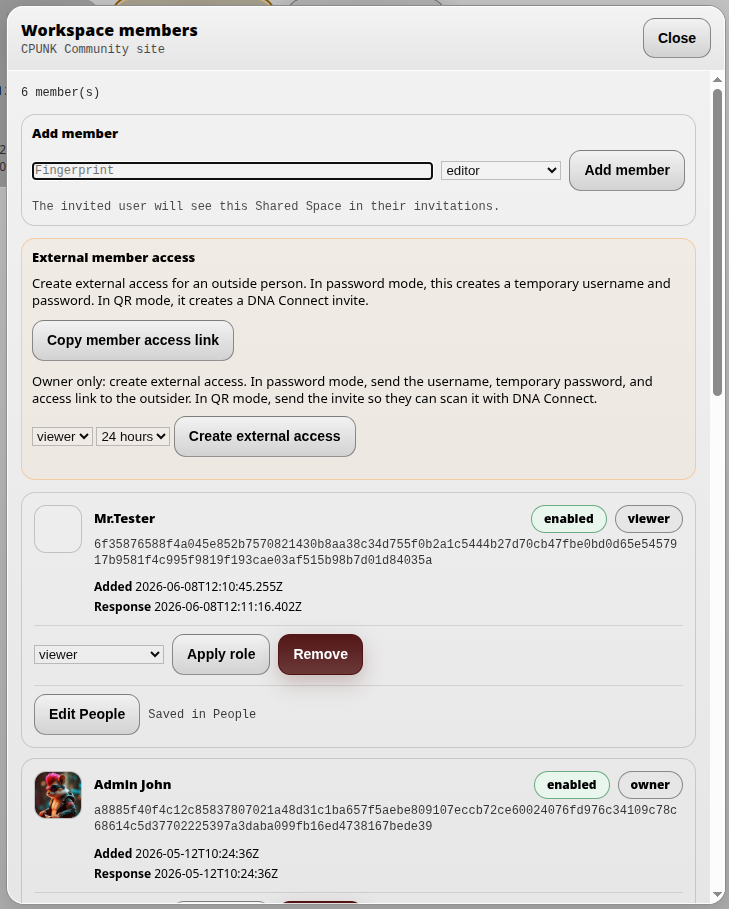
The Create external access button creates a single-use invite link that you can send to another person. From that link, the recipient opens the access page and signs in to the workspace, which grants access to the shared area.
Different roles can be assigned to workspace members.
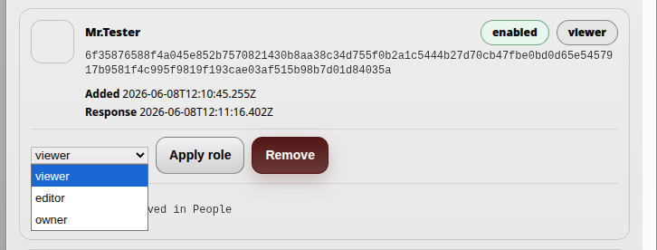
- Viewer can only view files. A viewer cannot modify the workspace contents.
- Editor has broader permissions. An editor can view files and make changes to workspace content, but cannot manage the workspace itself.
- Owner has the broadest permissions. An owner can manage members and, if necessary, remove the entire workspace.
Members can be removed and the whole workspace can be deleted from the bottom area of the member management dialog.
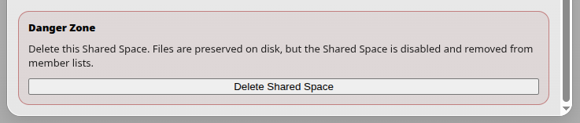
After choosing removal, the system asks for confirmation. To confirm deletion, type the name of the workspace.
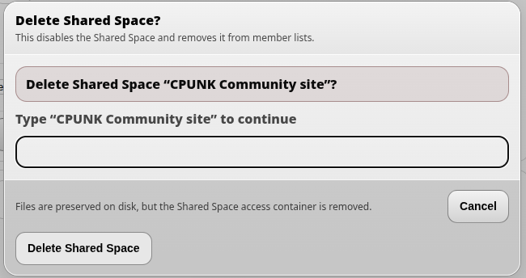
Trash and restore
When a user deletes files in File Manager, they are not removed permanently at once. Deleted files are moved to the trash first.
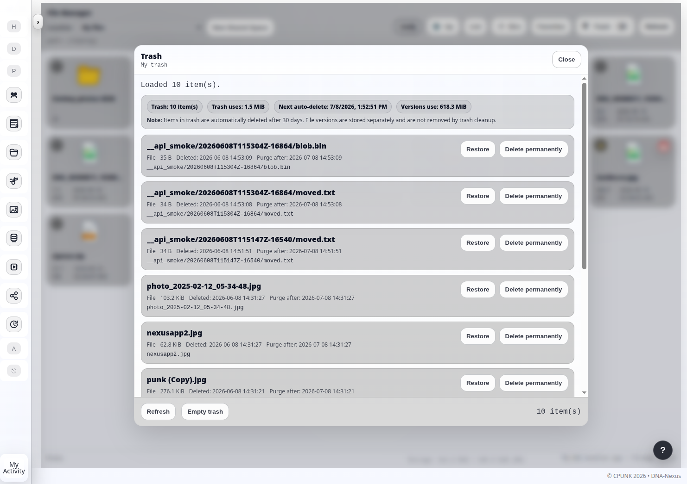
The trash can be opened from the trash button in the top toolbar. From there, users can restore accidentally deleted files or remove them permanently.
The top of the trash view shows information about the number of deleted items, the amount of space they use, and the next cleanup time. The cleanup removes files that have been in the trash for more than 30 days.